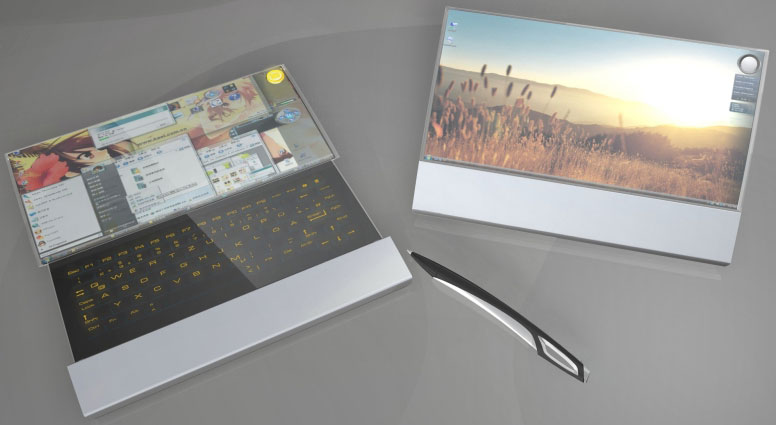
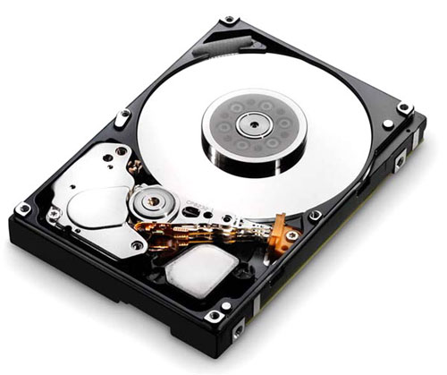

Статті
Ремонт ноутбуків
 Сервісний центр здійснює модернізацію і ремонт ноутбуків Acer, Asus, Toshiba, Sony, Samsung, Dell, HP, LG, IBM, Compaq, Fujitsu-Siemens та інших.
Сервісний центр здійснює модернізацію і ремонт ноутбуків Acer, Asus, Toshiba, Sony, Samsung, Dell, HP, LG, IBM, Compaq, Fujitsu-Siemens та інших.
Ремонт ноутбуків відбувається в сучасних ремонтних лабораторіях з використанням новітніх методик ремонту. Після ремонтних робіт виконується тестування ноутбуків. Тільки після цього ремонт ноутбуків вважається завершеним. Наші інженери мають високу кваліфікацію і великий досвід роботи, що дозволяє виробляти якісний ремонт ноутбуків будь-якого ступеня складності.
Підключення SSD диска
 Встановлюються SSD диск як для ноутбука, так і для звичайного ПК, в якості основних жорстких дисків (якщо мають значний обсяг) або як допоміжні накопичувачі, розраховані тільки на встановлення операційної системи із застосуванням інтерфейсу SATA. У разі їх використання комп'ютер починає працювати значно швидше, так як обмін даними відбувається без затримок, властивих HDD. Серед нових комп'ютерних комплектуючих виділяються своєю продуктивністю твердотільні накопичувачі, які позначаються абревіатурою "SSD". Вони поступово починають витісняти звичні нам HDD. Даний вид накопичувачів працює за принципом флеш-пам'яті, не має деталей які труться і крутяться, характеризується безшумністю.
Встановлюються SSD диск як для ноутбука, так і для звичайного ПК, в якості основних жорстких дисків (якщо мають значний обсяг) або як допоміжні накопичувачі, розраховані тільки на встановлення операційної системи із застосуванням інтерфейсу SATA. У разі їх використання комп'ютер починає працювати значно швидше, так як обмін даними відбувається без затримок, властивих HDD. Серед нових комп'ютерних комплектуючих виділяються своєю продуктивністю твердотільні накопичувачі, які позначаються абревіатурою "SSD". Вони поступово починають витісняти звичні нам HDD. Даний вид накопичувачів працює за принципом флеш-пам'яті, не має деталей які труться і крутяться, характеризується безшумністю.
Незвичайні форми ноутбуків
 Стандартний ноутбук, якщо відкинути периферійні пристрої, складається всього з двох частин: це екран, з'єднаний з клавіатурою рухомим механізмом по лінії стику між ними. Тобто звичайний і нічим непримітний «книжковий» формат. Все геніальне просто - така компоновка ергономічна і комфортна у використанні. Однак більшість конструкторів звикли мислити неординарно і часто створюють дійсно унікальні речі. За останні 25 років, після того як ноутбуки почали широко застосовуватися по всьому світу, патентні бюро накопичили багато унікальних, а нерідко і забавних проектів переносних ПК. Частина задумів так ніколи і не отримала розвитку в матеріальній формі, але деякі новинки були успішно створені. Складно уявити, яку кількість пристроїв вийшло з ладу за весь цей час, і, наскільки часто необхідно було виконати швидкий і якісний ремонт ноутбуків.
Поради по експлуатації ноутбука
 Крім дотримання чистоти і температурного режиму потрібно знати про те, що завдати шкоди вашому ноутбуку може вібрація. Будь-які удари по ньому, а тим більше падіння завдають непоправної шкоди. Перш за все жорсткому диску, на якому зберігається вся ваша інформація. І пошкодити жорсткий диск, значить втратити всю наявну на ньому інформацію. Крім жорсткого диска може бути завдано шкоди і материнській платі і системі вентиляції і дисплею, та й корпусу ноутбука. Тому не варто нехтувати такими речами, як спеціальні сумки для ноутбуків.
Крім дотримання чистоти і температурного режиму потрібно знати про те, що завдати шкоди вашому ноутбуку може вібрація. Будь-які удари по ньому, а тим більше падіння завдають непоправної шкоди. Перш за все жорсткому диску, на якому зберігається вся ваша інформація. І пошкодити жорсткий диск, значить втратити всю наявну на ньому інформацію. Крім жорсткого диска може бути завдано шкоди і материнській платі і системі вентиляції і дисплею, та й корпусу ноутбука. Тому не варто нехтувати такими речами, як спеціальні сумки для ноутбуків.
Способи збереження інформації з жорсткого диску
 Не дивно, коли у деяких активних користувачів ПК знаходиться два, або більше, вінчестерів з різними інтерфейсами, що залишилися ще від старих ПК. При наявності інтерфейсу SATA переглянути дані на сучасному комп'ютері не важко. Приєднати можна безпосередньо до наявного ПК за допомогою стандартного пристрою, що продається в будь-якому спеціалізованому магазині. Складності виникнуть з інтерфейсом IDE з тієї причини, що в даний час в комп'ютерах цей інтерфейс вже не використовується. Наш сервіс допоможе Вам впоратися з цією проблемою, а крім цього виконати якісний і швидкий ремонт комп'ютера в Києві.